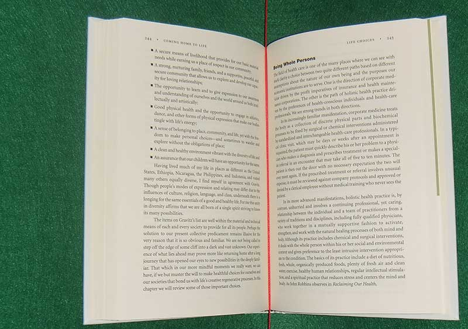
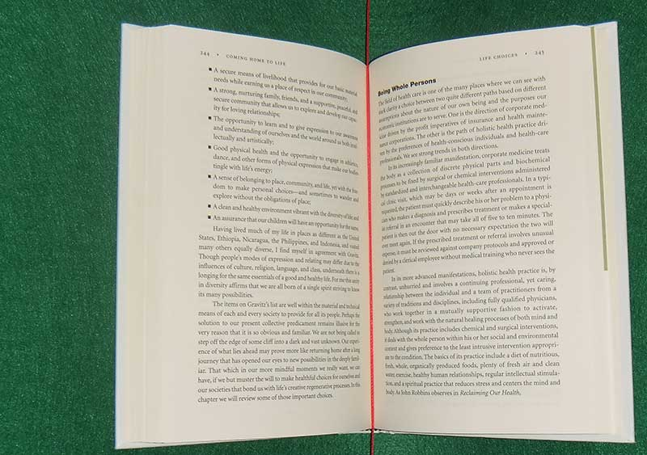

Decapod Help - Dewarp
What is Dewarp?
Dewarp is the process of taking a set of stereo images and its camera calibration data to produce a flattened version of the content.
Example Input Stereo 3D Pair:
 

Example Dewarp Output:
How to Dewarp Stero 3D Captures
- Create a ZIP file containing the stereo images that are to be dewarped. If the stereo images were captured using Decapod’s Capture tool, the images should already be in a ZIP file called “
capture.zip”.Note:
Stereo 3D images should follow a required file naming pattern before being ZIP'ed. Refer to "Naming Stereo Images" below. - Locate the ZIP file containing the stereo images that are to be dewarped.
- Locate calibration data generated by the Stereo 3D Calibration tool. The filename should be called "
calibration.zip". - Specify the page separator and background colour. See "Page Separator and Background Colour Picker".
- Select "Dewarp" to begin the dewarp process.
- When prompted, save the dewarped file to a safe location.
Naming Stereo Images
Decapod’s Dewarping tool expects the stereo images to be named in the following manner: capture-[capture #]_[camera #].[extension]
For example:
-
capture-01_0.jpg, capture-01_1.jpg, capture-02_0.jpg, capture-02_1.jpg ... -
capture-01_0.png, capture-01_1.png,capture-02_0.png, capture-02_1.png ... - Decapod supports dewarping of TIFF, PNG, and JPEG files.
For each [capture #] there will be two images - one from Camera 0 (i.e. left) and one from Camera 1 (i.e. right). The left image is always first, followed by the right image. If the images do not follow this format, then the Dewarp tool may not be able to process the images and may give undesired output.
If images were captured using Decapod’s Capture tool, by default the images should already be named to follow this format.
Page Separator and Background Colour Picker
To properly split the left and right pages, and to remove the background, the user must specify the background and page separator colour using the colour picker. The colour picker is launched by selecting the "Pick Colour" button.
- When the Pick Colour window loads, there will be an image shown.
- The first mouse click will choose the page separator colour. Do this by positioning the mouse pointer over the separator and click once.
- The second mouse click will choose the background colour. Do this by clicking the dominant background colour.
- The Pick Colour window will then close.
- Dewarp can begin by selecting the Dewarp button.
How Long Does Dewarp Take?
The dewarping process can take a long time. On a modern Intel i7 8-core system with 16GB of RAM, dewarping can take anywhere from 25 minutes to 1 hour per page spread.
What if Dewarp Fails?
It is possible that dewarping process fails and no useful output is delivered at the end. Some possible solutions to try:
- Is the environment well lit? The content and the background should be evenly lit with little glare or hard shadows.
- Try choosing the colour separator and background colour again using the Colour Picker.
- Is there sufficient disk space?